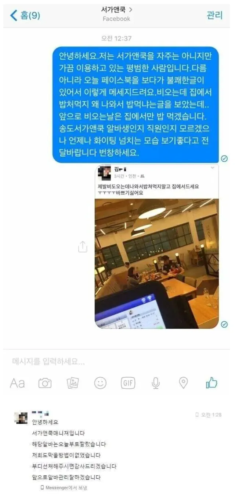

최고의 6줄
1. 인삿말
2. 자기소개
3. 대응
4. 사유
5. 사과
6. 향후대처
=
안녕하세요
국가대표 양민혁입니다
병역특례반납하고 입대 하겠습니다
제가 지금까지 병역 특례에 있어서 너무 가볍게 생각했던 것 같습니다
상처입으셨을 분들에게 진심으로 사죄드립니다
앞으로 이런 일이 반복되지 않도록 공부하겠습니다
이게 맞지 민혁아

최고의 6줄
1. 인삿말
2. 자기소개
3. 대응
4. 사유
5. 사과
6. 향후대처
=
안녕하세요
국가대표 양민혁입니다
병역특례반납하고 입대 하겠습니다
제가 지금까지 병역 특례에 있어서 너무 가볍게 생각했던 것 같습니다
상처입으셨을 분들에게 진심으로 사죄드립니다
앞으로 이런 일이 반복되지 않도록 공부하겠습니다
이게 맞지 민혁아
난 맞다고봄
민혁이니?
누구한테 피해준것도 아니고 그냥 니 기분나쁘니까 스스로 자기 배때기 가르라는거냐. 심성이 개꼬였네.
아~ 내 심기를 거슬렀잖아~
군대가는게 배때지 가르는거면 우리는 뭔 잘못을 해서 알아서 배때지 가르고 있냐
..군대 니만간것도아니고
뭐그렇게 배아파하냐..
서가앤쿡 요즘도 있냐? 옛날에 여친이랑 가서 목살스테이크 먹었는데
ㅇㅇ있음
서가앤쿡 무협느낌으로 서씨가문 +미국식 '앤쿡' 붙은거같음
")
죄송한지 안죄송한지 하나만 하라고!
호구 잡으려고 낚시질 열심히 하노 ㅋㅋ
면제받고 입대한다고 누가 알아주냐? 욕만 쳐먹으면서 시발시발 군생활하겠지
좀 아니꼬와도 뇌절은 하지말자
욕하면 어쩔건데 응 면제야~
서가앤쿡 계란후라이가 진짜 맛잇는데. 그거 어케하는거임?
뇌절 ㄴㄴ